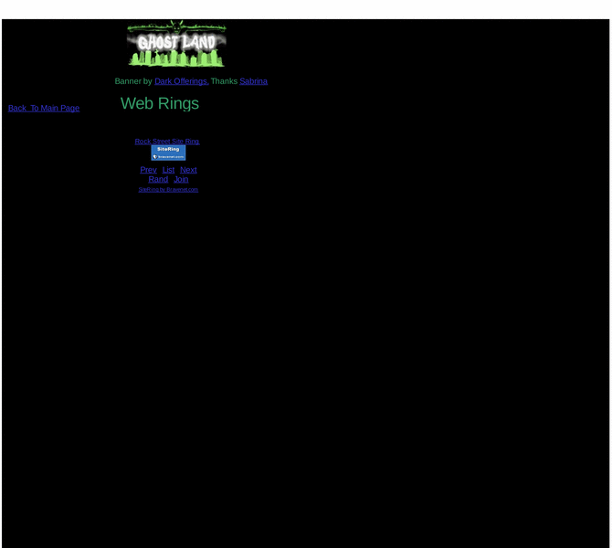

Previewing: Ghost Land Previewing: Ghost Land 
Use the left/right red arrow controls to navigate through this ring - Click the preview image to visit the member site.

Ghostly website of true Ghost Stories and research on hauntings. Photo Gallery of ghost photos. Large Link section to other ghost and sites of interest. Free screensavers.A messageboard to discuss your experiences with ghost. http://ghostland.homestead.com/
Ghost Land owned by:
 jeffstoll jeffstoll
A member of the original webring since 12/20/2003.
|
|